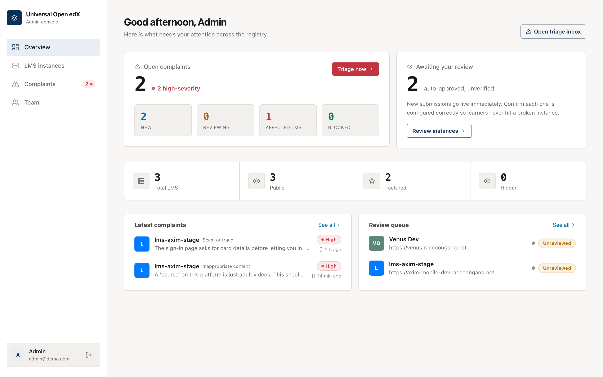
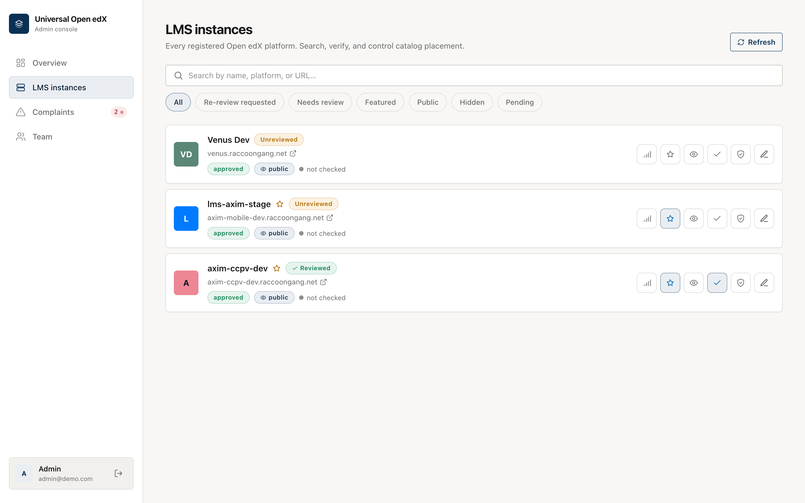
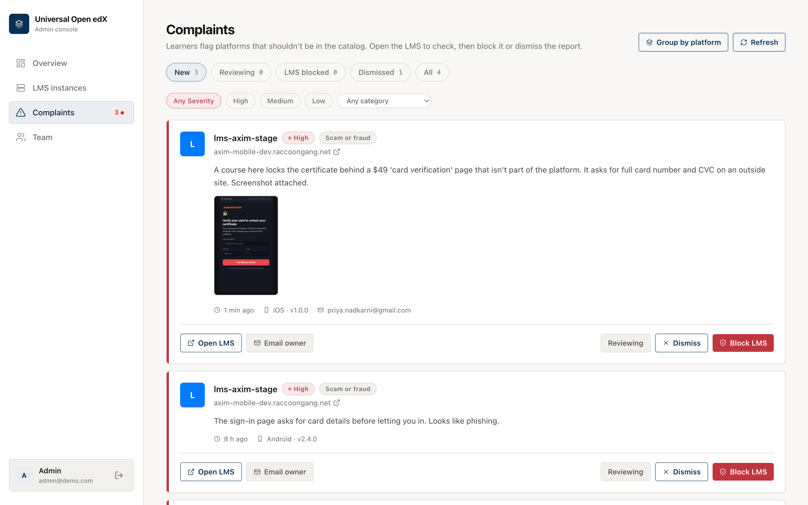
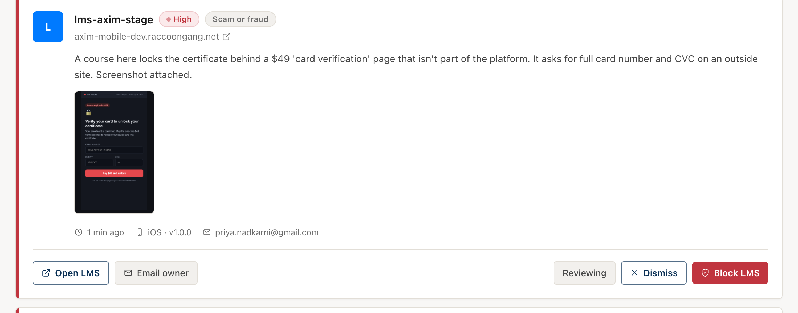
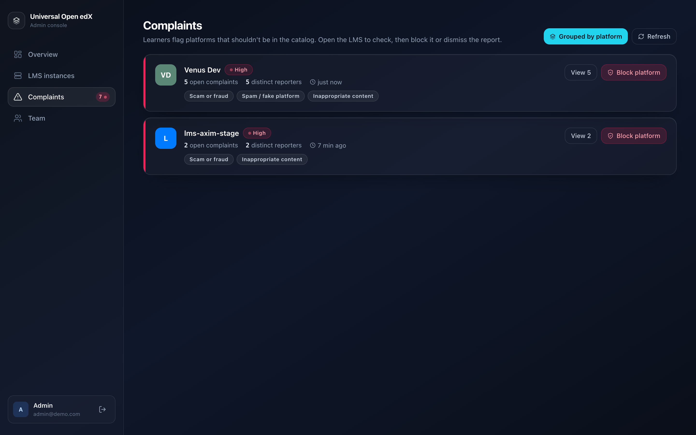
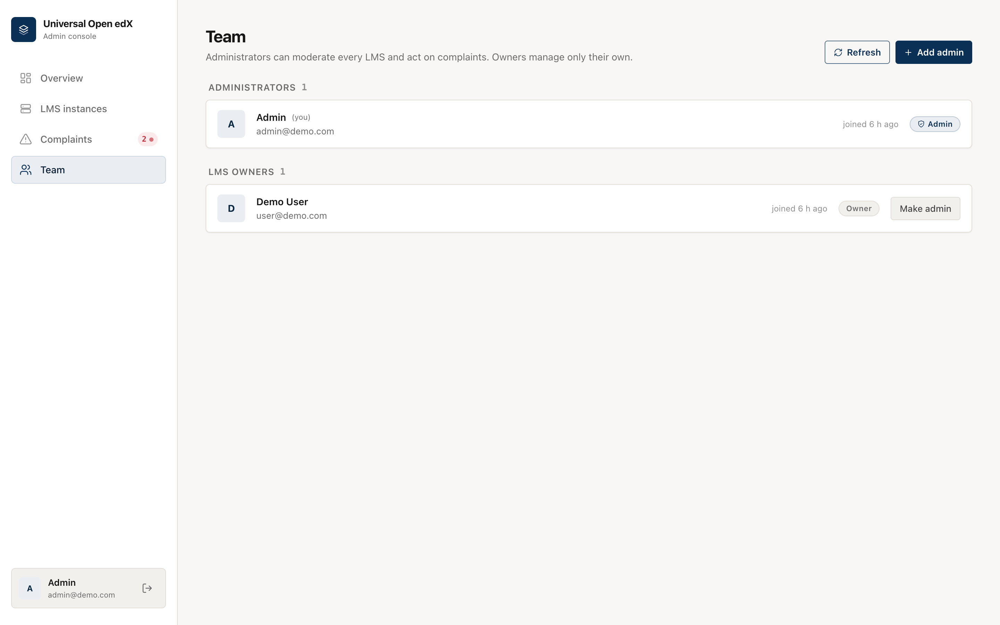

Admin console¶
Administrators moderate the whole catalog here: review new platforms, act on
learner complaints, and manage the team. Sign in at /dashboard with an admin
account.
Overview¶
The landing page shows what needs attention: open complaints (with how many are high-severity), how many platforms are awaiting your review, catalog totals, and the latest complaints and review queue.

The Complaints item in the sidebar carries a live badge; it turns red and a toast appears the moment a high-severity complaint arrives, even if you're on another screen.
LMS instances¶
Every registered platform, built to stay usable at hundreds of entries.

- Search by name, platform, or URL; filter by needs-review, re-review requested, featured, public/hidden, or pending.
- Per platform you can: recheck health (is it online?), feature it (for curated mode), toggle public/hidden, mark reviewed, block/restore, and edit it in the wizard.
- Status pills show approved / pending / blocked, plus health and review state.
Complaints (triage inbox)¶
Learner reports land here, high-severity first. Each card shows the platform, the category, the learner's message, an optional screenshot, and where it came from (iOS/Android, app version).

For each complaint you can:
- Open LMS — visit the platform to see the reported content yourself.
- Block LMS — remove it from the catalog (the app stops showing it). Reversible from LMS instances.
- Dismiss — the report isn't valid; keep the platform.
- Email owner — send (or open a pre-filled draft of) a notice explaining the reason and that access is restored once fixed.
Filter by status, severity, and category, and page through with Load more.
Screenshots as evidence¶
If the learner attached a screenshot, it shows right on the card — so you can judge without leaving the console.

Group by platform (spotting brigading)¶
Switch to Group by platform to see one row per reported platform with the number of complaints and the number of distinct reporters. This is how you tell a real problem (many different people) from a coordinated pile-on (one person, many reports). Block or drill into a platform straight from the group.

No automatic takedown
Complaints never hide or block a platform on their own — that would let a spam campaign knock out a legitimate platform. A person always makes the call. Rate limiting keeps the report flow itself from being flooded.
The audit trail¶
Every block, unblock, dismiss, review, owner-notification, and re-review request is recorded (who, what, when) and kept even after an unblock, so there's always a history of how a platform was handled.
Team¶
Administrators can moderate everything; owners manage only their own platforms. Any admin can add another admin or change a user's role.
